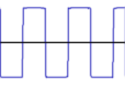
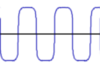
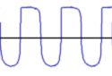
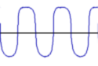

Distortion Effect
|
sharp clipping |
soft clipping |
symmetric |
 |
 |
asymmetric |
 |
 |
Audio Distortion is a way to add harmonics or overtones to an input signal by amplification of the signal beyond the capabilities of the equipment which causes clipping.
As a result a sound may sound richer but too much distortion may sound unpleasant.
AeonWave lets you select from hard-clipping, with sharp signal edges and lots of harmonics, to soft-clipping, with rounded signal edges and less and mostly uneven harmonics, and anything in between.
AeonWave also lets you select between symmetric distortion, which happens in transistor based amplifiers, and asymmetric distortion, which happens in certain valve based amplifiers.
As a result distortion ranges from hard-clipping Fuzz to Valve-like Overdrive by altering just a few parameters.
The effect is auto gain-adjusting which means there is no need to alter the signal-level to compensate the different settings.
AeonWave 3.7.2 (version 1.01 of the effect) adds support for a timed-transition of the effect strength.
The Distortion effect is supported by the Mixer, Emitters and Audio-Frames.
Distortion Effect parameters
The effect uses only one effect slot.
- AAX_DISTORTION_EFFECT
STEREO
-
p0
AAX_DISTORTION_FACTOR- A factor defining the amount of distortion.
Between 0.0 and 4.0
0.0 equals to no distortion, 1.0 is overdrive (+22dB amplification). 4.0 is full distortion (+86dB amplification).
p1
AAX_CLIPPING_FACTOR- A factor defining the amount of hard clipping.
Between 0.0 and 1.0
0.0 equals to soft clipping, 1.0 is hard clipping.
p2
AAX_MIX_FACTOR- A factor defining the mix between the distorted and clean signal.
Between 0.0 and 1.0
0.0 equals to only the original signal (no distortion mixed in),
1.0 equals to only the distorted signal.
p3
AAX_ASYMMETRY- Specifies the amount of asymmetric distortion.
Between 0.0 and 1.0
0.0 equals to symmetric, 1.0 equals to asymmetric distortion.
Distortion Effect state options
Specify AAX_TRUE or envelope-following to enable the distortion effect or AAX_FALSE to disable it.
Timed-transition is a one time action from full to no effect strength (or from no to full strength in inverted mode) which takes 1 second to complete.
Envelope following calculates the current amplitude and sets the effect strength based on that with an update speed of 1 second.
- AAX_ENVELOPE_FOLLOW will provide strong distortion for loud signal peaks and virtually no distortion for soft sections.
- AAX_INVERSE_ENVELOPE_FOLLOW will provide strong distortion for soft sections and virtually no distortion for loud signal peaks.
- AAX_DISTORTION_EFFECT
-
Valid types are:
- AAX_CONSTANT_VALUE (or AAX_TRUE)
- AAX_TIMED_TRANSITION
- AAX_ENVELOPE_FOLLOW
- AAX_INVERSE_TIMED_TRANSITION
- AAX_INVERSE_ENVELOPE_FOLLOW
All waveforms may be combined with AAX_ENVELOPE_FOLLOW_LOG or
AAX_INVERSE_ENVELOPE_FOLLOW_LOG to create exponential behaviour, e.g.
AAX_ENVELOPE_FOLLOW|AAX_ENVELOPE_FOLLOW_LOG